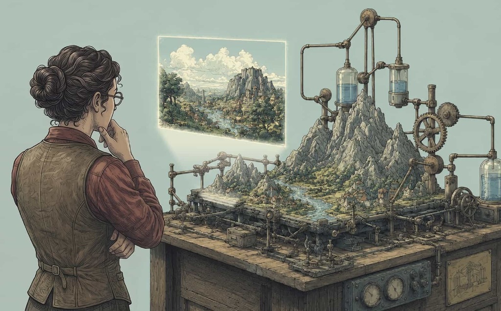
Introduction to Agentic World Model
技术路线 · 评测基准 · 空间重访实测
李睿哲 · 中国科学技术大学 (USTC)
Group Meeting · 2026.11.25
Agenda · 组会 2026.11.25
目录
- RQ1什么是 World Model文献定义
- RQ2目前 World Model 有哪些技术路线路线 0–3 综述
- D1Agentic Coding 路线Discussion
- RQ3如何衡量一个好的 World Model基准与算子
- RQ4Agentic 路线的代表工作前沿论文
- D2现有工作的缺点与未来方向实测与讨论
RQ1
什么是 World Model？
| 标题 | 信源 | 时间 | 研究视角 |
|---|---|---|---|
| A Functional Taxonomy of World Models | World Labs · Fei-Fei Li | 2026 Jun | 三功能器闭环定义 |
RQ1 · 核心辨析
视频生成 ≠ 世界模型：Seedance 2.5 vs. Genie 4
VIDEO GENERATOR · Seedance 2.5
一次写死整段「观测画面序列」
@图1–18 → 一次性生成固定 30s 成片- 建模对象 · 直接拟合像素序列 o0:T，无持久状态 st
- 控制时机 · 仅在 t = 0 给条件，开跑后只读播片
- 反事实性 · 问“若中途左转会怎样”只能全片重抽
WORLD MODEL · Genie 4
持续维护「世界状态」并响应每步动作
WASD 实时控移动 + 底部随时打字改世界- 建模对象 · 维护瞬时状态 st 与演化 (st, at) → st+1
- 控制时机 · 每一时刻 t 持续接键鼠与事件实时闭环
- 反事实性 · 同一起点施加不同 at 实时走出不同未来
RQ1 · World Labs 功能定义
三种功能角色构成闭环
st ≠ ot 瞬时状态 ≠ 投影画面
功能角色可合可分
RQ2
目前 World Model 有哪些技术路线？
| 标题 | 信源 | 时间 | 研究视角 |
|---|---|---|---|
| Video generation models as world simulators (Sora) | OpenAI | 2024 Feb | 路线 0 · 视频基线（非严格 WM） |
| One-Take Creation & Flexible Referencing: Seedance 2.5 | ByteDance Seed | 2026 | 路线 0 · 多模态单次视频生成 |
| Genie 3 & Genie 4: A New Generation of World Simulation | Google DeepMind | 2026 | 路线 1 · 流式像素实时交互 |
| Atlas: A Foundation Model for Spatial Intelligence | World Labs · Fei-Fei Li | 2026 | 路线 2 · 显式 3D 空间上下文 |
| V-JEPA 2: Self-Supervised Video Models Enable Planning | Meta FAIR · Yann LeCun | 2025 Jun | 路线 3 · 无像素潜空间闭环 |
| Mastering Diverse Domains through World Models (Dreamer) | Nature 2025 | 2025–2026 | 路线 3 · 潜空间想象训练 |
RQ2 · 路线 0–3 总览
状态 st 存在哪？画不画像素？
| 技术路线 | 核心机制（状态与交互） | 代表人物 | 代表工作 / 系统 |
|---|---|---|---|
| 0. 单次视频生成非严格 WM · 基线 | 无持久状态 st · 整段一次去噪 · 无中途 at, ct 接口 | Tim Brooks · Bill Peebles · Lu Jiang | Seedance 2.5 · Sora 2 · Veo 3 · Kling 3.0 |
| 1. 流式像素交互派云游戏直觉 | 状态藏于 KV Cache · 单视频网包揽 Sim + Ren 实时响应按键 | Jack Parker-Holder · Tim Rocktäschel · Shlomi Fruchter | Genie 3 / 4 · Oasis 3 · GWM Worlds 2 · LingBot · GAIA-4 |
| 2. 显式 3D 记忆派三维沙盘 | 状态固化为 Spatial Context / 3DGS / Mesh · 自由取景 | Fei-Fei Li · Justin Johnson · Ben Mildenhall | Atlas · Marble · HY-World 2.0 · SANA-WM |
| 3. 无像素潜空间派闭眼算棋 | 状态存为紧凑潜向量 zt · 砍掉高清像素 Renderer 极速规划 | Yann LeCun · Danijar Hafner | V-JEPA 2-AC · Dreamer 4 · TD-MPC2 · Meta CWM |
RQ2 · 路线 0 代表（视频基线） · ByteDance Seed
Seedance 2.5：@ 多模态单次提交，中途零交互
输入 IN
文本提示词 + 最多 50 个参考资产（≤30 图 · ≤10 视频 · ≤10 音频）
接口 UI
提示框内联
@图1 @视频1 @音频1 绑定主体/场景/运镜，点一次发送键 ↗
交互 LOOP
开环一次性去噪 · 生成途中无 at / ct 干预接口，改动作只能重写重抽
输出 OUT
最长 30s 音画原生同步 MP4（开放域画质最强，无三维持久状态 st）
@图1–18 输入框 → 一次性输出 30s 音乐厅音画成片RQ2 · 路线 1 代表 · Google DeepMind (Genie 3 → Genie 4)
Genie 4：键鼠实时控位姿 + 中途打字改世界
输入 IN
开局文本 / 首帧图 + 每帧键鼠动作 at, ct + 中途自然语言事件
接口 UI
云游戏视口：左下
WASD 移动 + 右下 ↑↓←→ 视角 + 底部实时 Rewrite 输入框
交互 LOOP
流式逐帧闭环 · 边按键边生成下一块帧，可中途随时打字刷出新角色或改天气
输出 OUT
720p · 24 FPS 实时视频流 + 同步环境音/语音（隐式 KV Cache 记忆，超窗口易遗忘）
WASD 行走 + 右下转视角 + 底部实时输入刷出“提行李箱老人”RQ2 · 路线 1 亲手实测 (My Try) · Project Genie
Genie 4 实测：工位单图 → 实时键鼠漫游（4× 快放 · 30s）
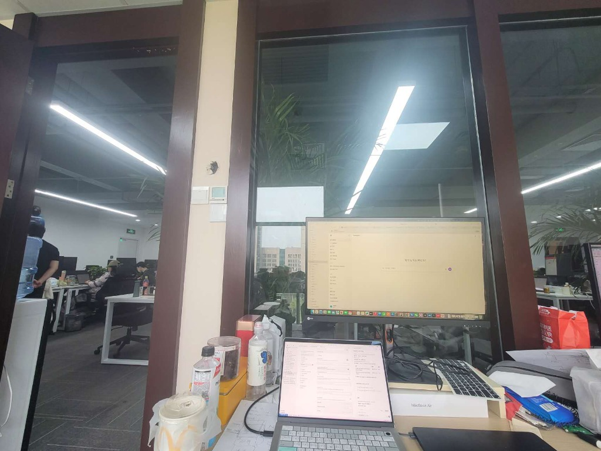
- 丝滑推演 · 按
WASD退离工位、穿门走进外间与侧室 - 开放脑补 · 连贯生出饮水机、绿植、白板与窗外楼群
- 隐式漂移 · 中后段突然冒出手持纸张又消失，无三维几何锁死
WASD + 方向键RQ2 · 路线 2 代表 · World Labs (Atlas)
Atlas：三维坐标上下文锚定，自由漫游零漂移
输入 IN
单图 / 多图 / 文本 + 精确 3D 相机几何（写入
Spatial Context）
接口 UI
Viewfinder 三维取景器（框选空白视角点 Render 扩建）+ Chisel 灰盒
交互 LOOP
先锚定空间 → 再自由取景 · 支持
Frameboy（15 FPS）实时流或引擎漫游
输出 OUT
持久 3D 高斯 (
.spz/.ply) + 网格 (.glb)（重访零漂移，但场景凝固静态）
Viewfinder 三维视锥扩建与漫游Splats → Mesh 显式几何导出RQ2 · 路线 2 亲手实测 (My Try) · 同一张工位图跑 Atlas
Atlas 实测：摆三维取景框 → 指哪补哪、钉入显式三维壳
- 显式三维锁死 · 视锥钉入
Spatial Context (8/64) - 指哪补哪 · 框选空白点
Render透视严丝合缝 - 静态沙盘 · 离线补全布景，无实时动态交互
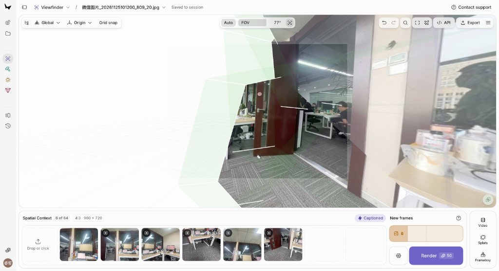
RQ2 · 路线 3 代表 · Meta FAIR (Yann LeCun 团队)
V-JEPA 2-AC：不画任何未来像素，潜空间搜动作控真机
输入 IN
机械臂当前相机图 ot + 本体位姿 + 一张目标完成图 og
接口 UI
具身控制 API 闭环（无人类交互视口，全程砍掉像素解码器）
交互 LOOP
每步 MPC 重规划 · 潜空间 z 内并行推演多条候选动作，挑最接近 zg 的首步执行
输出 OUT
7 维连续动作
[Δx,Δy,Δz, Δr,Δp,Δy, 夹爪]（未知桌面零样本抓取 65%–80%）
Start 当前图 + Goal 目标图 → 潜空间并行搜轨迹 → Franka 机械臂抓取RQ2 · 行业与学界版图
谁在发 World Model？（区分同厂视频线）
原生独角兽
专职 WM 创业
- World Labs · Atlas / Marble
- AMI Labs · JEPA 路线
- Decart · Oasis 3 / Lucy
- Odyssey · Odyssey-3 Pro
- Runway · GWM Worlds 2
- 极佳 / 大晓 · GigaWorld · 开悟
大厂 WM 专线
独立于影视视频线
- DeepMind · Genie 4 / Dreamer 4 (≠Veo)
- NVIDIA · Cosmos · SANA-WM
- Meta · V-JEPA 2-AC · CWM
- 腾讯混元 · HY-World 2.0
- 蚂蚁 / 阿里 · LingBot · HappyOyster
智驾与具身
虚拟考场与合成数据
- Wayve · GAIA-1 → GAIA-4
- Waymo · Waymo WM
- 1X Tech · 1XWM
- 华为 / 蔚来 · WEWA · NWM
- 吉利 / Momenta · WAM · R7
学术界开源
机制与架构探索
- 奠基 · Ha & Schmidhuber
- 神经游戏 · UniSim · DIAMOND · GameNGen
- 分层潜规划 · MBZUAI PAN 2
- 漫游记忆 · YUME · Aether · WorldMem
RQ2 · 小结对比
路线 0–3 无一能同时守住五项要求
| 主流路线 | 视觉画质 | 3D 空间持久 | 物理因果动态 | 局部可编辑 | 推演速度 |
|---|---|---|---|---|---|
| 0. 单次视频生成（基线） | ✓✓ 最高 | ✗ 易失忆 | ✗ 无动作接口 | ✗ 难局部改 | — 离线整段 |
| 1. 流式像素交互派 | ✓ 高动态 | △ 窗口受限 | △ 守恒易漂 | ✗ 隐式黑盒 | △ 算力极重 |
| 2. 显式 3D 记忆派 | ✓ 视角稳 | ✓✓ 零漂移 | ✗ 凝固静态 | ✓ 可导资产 | ✓ 实时渲染 |
| 3. 无像素潜空间派 | — 无画面 | △ 压缩丢细节 | ✓ 聚焦决策 | ✗ 潜向量黑盒 | ✓✓ 快数十倍 |
Discussion 1 · 我们的视角
D1
Agentic Coding 路线
01 · Sora 扩增纯视频即可涌现世界模拟
02 · Fei-Fei Li The World Is Not Made of Words
03 · GPT-6-Astra 代码已能构建动画 · 3D 资产 · 3D 视频
Discussion 1 · 01 / 03 · OpenAI Sora (2024.02)
观点一：扩增纯视频生成，就能涌现世界模型智能
OpenAI 原话：
“Scaling video generation models is a promising path towards building general purpose simulators of the physical world... without any explicit inductive biases for 3D, objects, etc.—they are purely phenomena of scale.”
“Scaling video generation models is a promising path towards building general purpose simulators of the physical world... without any explicit inductive biases for 3D, objects, etc.—they are purely phenomena of scale.”
- 核心信仰 · 无需任何显式 3D 或物理引擎偏置
- 路径假设 · 把所有视觉数据压成时空 Patch，靠规模涌现三维一致性与物理规律
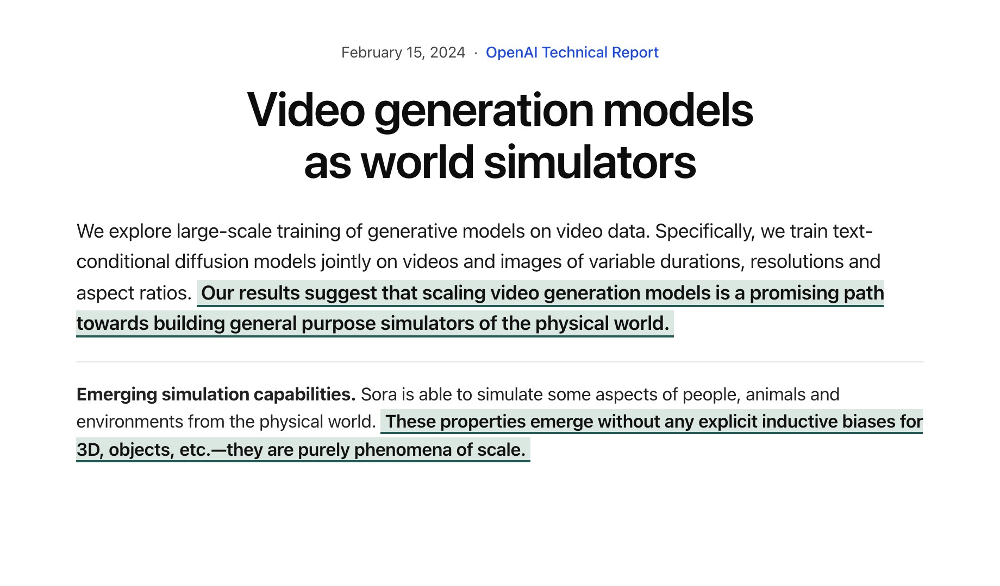
Discussion 1 · 02 / 03 · World Labs · Fei-Fei Li (2026.06)
观点二：The World Is Not Made of Words
李飞飞原话：
“Language models have given machines an extraordinary command of concepts, vocabulary, and reasoning, but the physical world, virtual or real, runs on a different substrate.”
“Language models have given machines an extraordinary command of concepts, vocabulary, and reasoning, but the physical world, virtual or real, runs on a different substrate.”
- 核心判断 · 语言模型学文本统计结构，世界模型学空间与时间结构
- 直指局限 · 纯自然语言（Words）无法精确承载三维几何、遮挡透视与物理受力
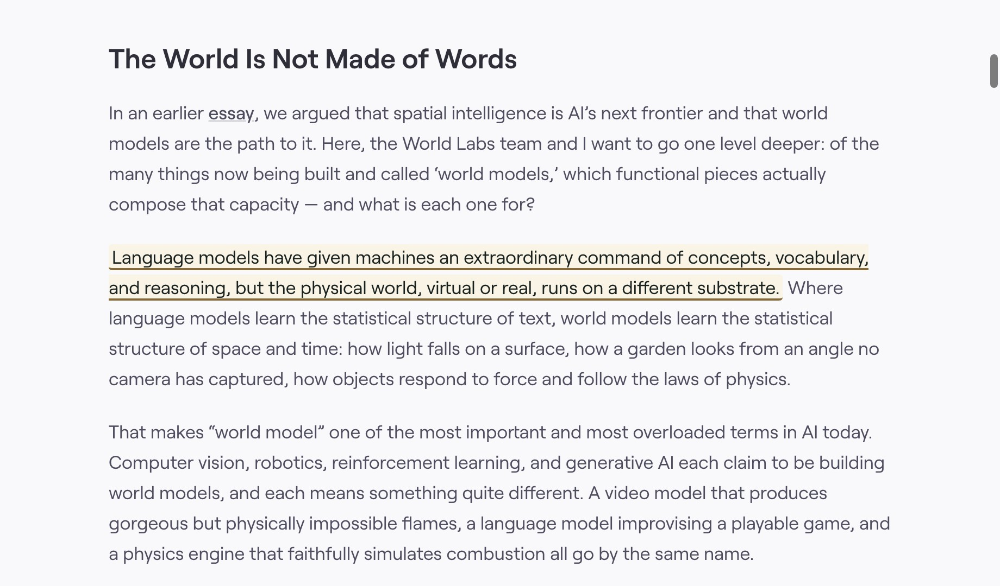
Discussion 1 · 03 / 03 · OpenAI GPT-6-Astra / 6.2-Astra (2026)
转折信号：GPT-6-Astra 已能通过代码构建 3D 世界
- 3D 资产与机械结构 · 写 CAD / Python 代码重建五速变速箱（
BenchCAD 95.9%） - 建筑建模与漫游动画 · 自主操作
Blender建庭院住宅与 250 帧关键帧动画，导入UE5漫游 - 3D 视频与交互世界 · 直写
Three.js / Unity输出1080p 24fps可交互三维场景（与 Seedance 2.5 同镜对比）
我们的切入点： 用 Agent 写可执行 3D 代码守住几何与物理，再结合神经渲染补齐真实世界质感。
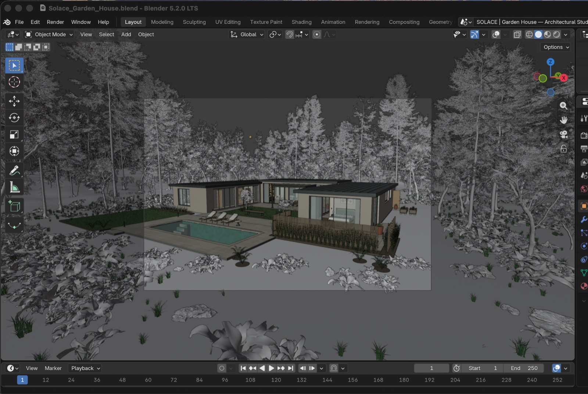
RQ3
如何衡量一个好的 World Model？
| 标题 | 信源 | 时间 | 研究视角 |
|---|---|---|---|
| A Survey of World Model Benchmarks | NTU · Dacheng Tao | 2026 Sep | 102 个基准全景分类 |
| Towards Interactive Video World Modeling | Univ. of Cambridge | 2026 | 开环 → 闭环四关协议 |
| Physics-IQ: Benchmarking Physical Understanding | CVPR 2025 | 2025 Jun | 第 1 关 · 实拍物理续写 |
| WorldScore: A Unified Evaluation Benchmark | ICCV 2025 | 2025 Oct | 第 2 关 · 空间与动静分离 |
| WorldModelBench: Judging Video World Models | NeurIPS 2025 | 2025 Dec | 第 1 关 · 物理违规判别 |
| World-in-World: World Models in a Closed-Loop World | ICLR 2026 Oral | 2026 Apr | 第 4 关 · 闭环规划效用 |
RQ3 · 评测结构
按控制信号递进为「四关」
RQ3 · 第 1 关（无外部控制）
表观与物理合理性：代表评测集与考题
| 评测集（信源） | 输入 → 输出 | 在评什么？（判分机制） | 典型考题示例 |
|---|---|---|---|
| VBench 2.0NTU S-Lab | 文本 / 首帧 → 视频 | 物理常识、光学与人体结构忠实度（VLM + 检测） |
热锅化冰 · 对着镜子挥右手（查对称） |
| PAI-BenchCVPR Oral · NVIDIA | 实拍首帧 + 文本 → 视频 | 真实场景重力、碰撞因果与交规（Rubric 裁判） |
雨夜路口电动车横穿 → 减速与溅水花 |
| Physics-IQCVPR 2025 · DeepMind | 前 3s 实拍 → 后 5s 视频 | 对比真实后续录像的运动掩码 时空 IoU / MSE |
骨牌刚倒首块，正中放橡皮鸭挡路看停不停 |
| VideoPhy-2ICLR 2026 · UCLA | 动作物理文本 → 视频 | 语义与物理常识双项同时 ≥4 分合格率（微调裁判） |
球拍大力击网球形变反弹 · 踩踏板起跳 |
| WorldModelBenchNeurIPS 2025 · UCB/MIT | 首帧 + 文本 → 视频 | 逐项扣查质量守恒、重力与穿模违规（6.7万标注微调） |
半杯水倾斜倒进空碗 → 查杯内水位是否同步降 |
| Last ExamPeking Univ. | 实验首帧 + 条件 → 视频 | 算子从画面直接量周期 / 液面高度核对物理公式 | 等长但一重一轻双单摆同时释放（测等时性） |
RQ3 · 第 1 关跑分
画质已饱和，定量物理仍是硬伤
VBench 1.0表观画质 (0–100)
63–80 → 86+ 饱和
VBench 2.0内在常识 (%)
38–59% → 66.7%
PAI-Bench物理合理性 (上界 89.8)
60.0 – 87.1
Physics-IQ实拍续写 (%)
<24% → 50% / 66%*
VideoPhy-2双达标率 (%)
17–33% → 47.7%
Last Exam公式核验 (0–100)
≤57.8 → 65.5 (3D代码)
原论文初版区间
纯神经网络 SOTA
多采样验证* / 接入 3D 代码仿真
RQ3 · 第 2 关（给相机轨迹 ct）
视角控制与空间持久：各基准到底在评什么？
| 评测集（信源） | 输入 → 输出 | 到底在评什么？（核心指标） | 典型考题示例 |
|---|---|---|---|
| SANA-WM-BenchNVIDIA Research | 首帧 + 60s 6-DoF 轨迹 → 长视频 | SLAM 相机轨迹误差 + 长程画质退化 + 同位姿重访像素一致度 |
街口右转绕小巷一圈，第 55s 转回原街口朝向 |
| WorldScoreICCV 2025 · Stanford | 首帧 + 分段运镜指令 + 下一空间文本 → 连贯视频 | ① 镜头走准没 + 新房间生成没；② 跨镜 3D 重投影几何变形没；③ 拆静/动两榜测物体光流（防静态模型靠定格刷分） | 从客厅右移穿拱门进餐厅，再推近餐桌果盘 |
| R2M-BenchTongji × Ant Group | 首帧 + 离开再折返轨迹 → 重访视频 | 用片内非重访段校准的归一化重访记忆比 NMR（防镜头原地不动刷分） |
背离展厅雕像走远 → 转 180° 走回再正对雕像 |
| WorldMemBenchZJU × Fudan × Ant | 首帧 + 多轮往返轨迹（含屏外事件）→ 视频 | 人物/物体身份保持（SAM2/DINO）+ 移开镜头期间屏外状态是否继续演化 |
左→右→左往返看人；移开镜头期间蜡烛燃尽 |
| Invoker 140InclusionAI | 外观参考图 + 73 帧三维深度流 → 视频 | 流式神经渲染对给定三维几何骨架的结构贴合度与跨帧纹理稳定度 | 夜间路口首帧 + 73 帧车流深度序列渲染 |
RQ3 · 第 2 关跑分
静态记忆靠显式 3D，动态演化靠视频流（静—动跷跷板）
SANA-WM-Bench60s 闭环综合分 (0–100)
34–58 → 74.8
WorldScore · 静态跨镜静态空间分 (0–100)
≤62.2 → 72.7 (显式3D)
WorldScore · 动态含运动物体跨镜分 (0–100)
3D动量归零 → 59.1
R2M-Bench重访记忆比 NMR (0–1+)
0.02–0.71 → 0.88–1.01*
WorldMem · 静态多轮往返环境保持 (%)
42–76% → 94.7% (3D记忆)
WorldMem · 动态屏外事件延续 (%)
29.4% (3D) → 80.8%
流式基线区间
纯流式视频 SOTA
显式 3D 记忆 / 接入 3D 代码代理*
RQ3 · 第 3 关（给动作干预 at）
同一初始状态 s0，不同动作能否走出不同结果？
WBench Fudan · 45 模型
开箱点烛 → 下雪 → 切视角 · Genie 3 均分 73.9
WorldMark Univ. of Tokyo · WASD 控制论
平移最高 98.4，但部分模型转向准确率仅 2.7
ACWM-Phys Georgia Tech
刚体推块高分，一遇倒水与柔性布料断崖退化
RQ3 · 第 4 关（自主选动作闭环 · 全派同台）
不看画面好不好看，只看任务成没成功
World-in-World · ICLR 2026 Oral
陌生房屋找苹果（画面好 ≠ 好用）
- 纯 VLM 基线：35.4%
- 直调未对齐视频模型：倒退至 22.9%
- 动作对齐 + 修正：48.6% SOTA
WorldArena 2.0 · Tsinghua / USTC
机械臂合成轨迹训策略
- 通用视频模型 Wan 2.2：15% / 41%
- 动作对齐具身模型 WoW：45% / 71%
- 真机实采上界：77% / 66%
DROID 真机 · 路线 3 潜空间代表
无像素 0.2s 实时零样本抓放
- 传统微调策略 Octo：~15%
- Meta V-JEPA 2-AC：65% – 80%
Minecraft / SWE-bench · 路线 3 代表
长程想象训练与代码状态推演
- Dreamer 4 全离线 2 万步挖钻：0% → 0.7%
- Meta CWM 32B 代码解决率：65.8%
RQ3 · 自动阅卷方式
四大自动打分范式
01 · 像素考卷
VLM 裁判
- 按 Rubric 判常识因果
- 无需参考真值
- 画质偏见 · 同源刷分
02 · 像素考卷
视觉 / 3D 算子
- SLAM · 重建 · 跟踪
- 客观定量可解释
- 防“镜头不动”刷分
03 · 像素 / 3D
真值参考对齐
- 比实拍/仿真 IoU · PSNR
- 物理几何约束最硬
- 易误罚合理多样性
04 · 全派通用
闭环任务结算
- 真机/仿真环境判成败
- 唯一兼容无像素路线
- 成本高 · 耦合规划器
RQ3 · 拆解视觉与 3D 算子
所谓几何感知算子，就是去视频里拿尺子量四件事
01 · SLAM 位姿反推
量镜头「走没走准」
倒推实际轨迹 vs 指令路线偏差
02 · 多帧三维重建
量结构「歪没歪」
不同视角拼回 3D，抓墙面变形融化
03 · 抠图跟踪比特征
量物体「变没变样」
遮挡或绕一圈回来，查换脸与变色
04 · 点跟踪与光流
量曲线「合不合公式」
描出小球/液面轨迹，代物理公式算误差
RQ4
Agentic 路线的代表工作
| 标题 | 信源 | 时间 | 研究视角 |
|---|---|---|---|
| 3DCodeVerse: Exploring 3D Worlds as Code | USC · Laurent Itti | 2026 Oct | 训左端 LLM 写准 3D 代码 |
| Code World Model 2.0 (Invoker-Render 1.0) | InclusionAI (Ant Group) | 2026 Nov | 训右端流式 DiT 读多粒度草模 |
| Coda-DaVinci: Reimagining Video Generation with Code2Video | KlingAI Research | 2026 Nov | 顶层 Agent 路由与适度建模 |
RQ4 · 核心范式
基本范式：Agentic Coding 输出草模视频驱动 DiT
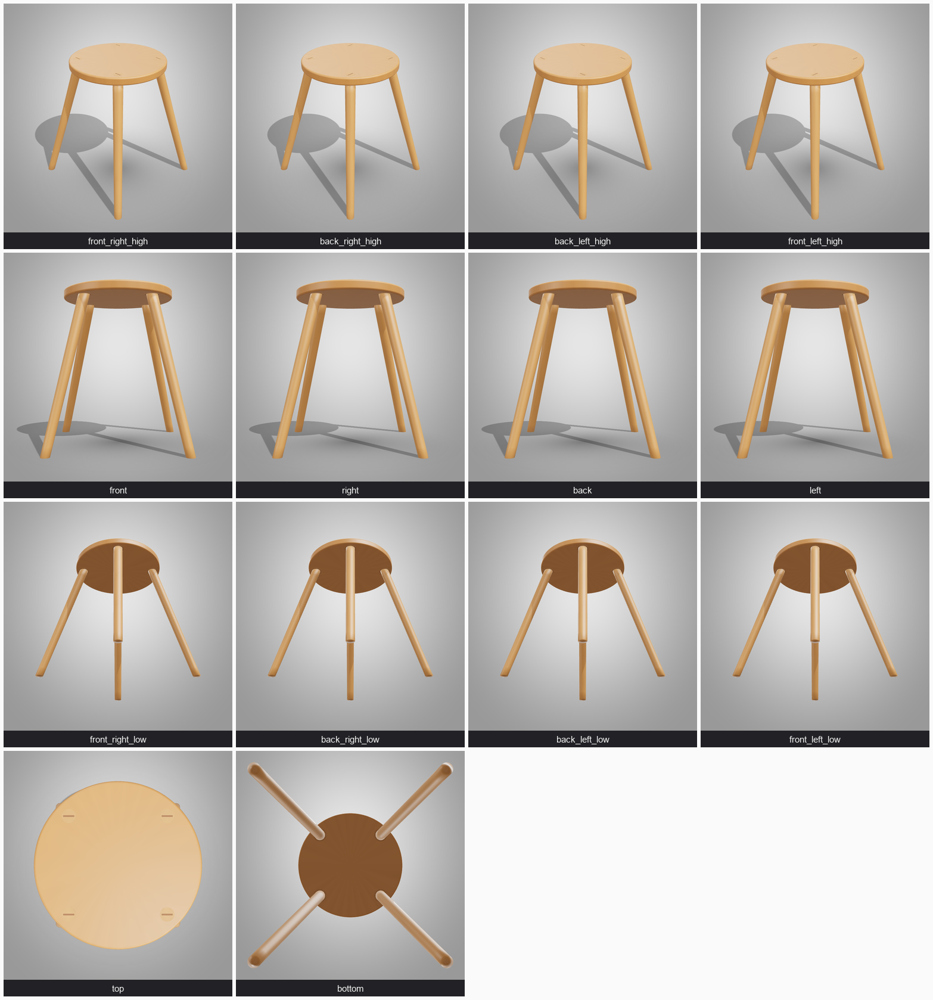
RQ4 · 工作一 · 3DCodeVerse (USC · 2026 Oct)
3DCodeVerse：训左端 LLM 写准可执行 3D 代码
TASK I/O
文本 / 参考图 → Blender · Three.js · CAD · URDF 代码
运行导出 .glb 网格，供下游直接渲染草模视频
RESEARCH QUESTION
通用 LLM 直写 3D 代码极易语法报错、比例失真
RQ4 · 3DCodeVerse 结果
4 张 H100 训数小时，可执行率跃升至 85%–93%
27 万独立可执行 3D 程序
4 × H1009B SFT 仅 4.8 小时
0% → 84.9%Qwen-9B (3DCodeBench)
51.9% → 92.9%Qwen-27B (SFT+DPO)
- Blender 留出集可执行率：1.9% → 90.3%
- Harness 人类偏好盲测：~90% 胜率优于传统 Text-to-3D
- 本组本地复现：45cm 圆木凳任务，导出 GLB 实测高度 45.02 cm（0.909 → 0.931）
RQ4 · 工作二 · Code World Model 2.0 (InclusionAI · 2026 Nov)
Code World Model 2.0：训右端流式 DiT 读懂多粒度草模
RQ4 · CWM 2.0 训练与案例
ProForcing 四步蒸馏：18 FPS 稳态流式不糊屏
1. 多粒度流匹配
2. 因果分块适配
3. ProForcing 四步蒸馏 + 自生成历史训练
18 FPS1344×768 (8 卡)
1232.0140 序列 SOTA
30 min连续驾驶不糊屏
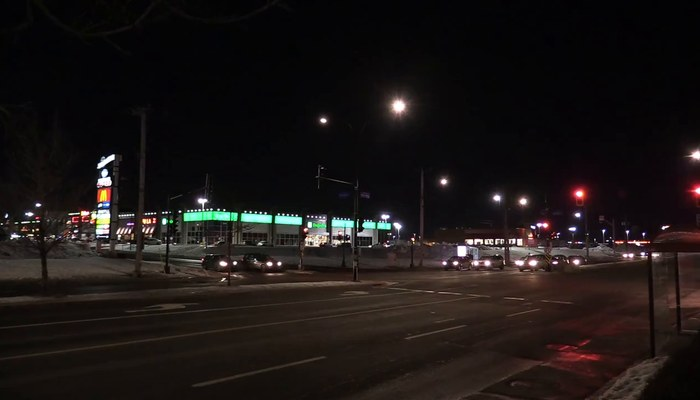
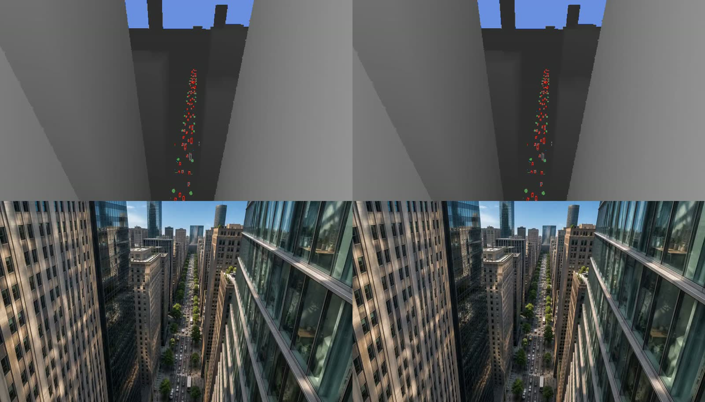
RQ4 · 工作三 · Coda-DaVinci (KlingAI Research · 2026 Nov)
Coda-DaVinci：Agent 自主决策用不用代码、Proxy 建多细
写进 Blender 草模（硬约束）
只锁死「绝对不能错」的骨架
- 定轨相机与空间地标坐标
- 刚体碰撞 · 单摆周期 · 水位守恒
- 屏外持续状态（转开镜头落叶照吹）
留白给视频 DiT（软细节）
自然质感交给生成先验
- 人物五官、手指关节与衣物褶皱
- 全代码硬写细部 → 动作僵硬带“塑料感”
- 无硬约束普通镜头 → 直接路由纯 DiT
RQ4 · 草模 Proxy vs 最终成片
锁住屏外进度与重访地标，同一后端全面刷榜
25s 台阶吹落叶（镜头转开 15s 再回看）
30s 科幻广场定轨多次回访
57.8 → 65.5Last Exam 物理 SOTA
0.88 – 1.01R2M 空间重访 SOTA
59.2% → 11.1%VTR 动态文字词错率 ↓
0 重训固定同一 Seedance 2.5
Discussion 2 · 实测与讨论
D2
现有工作的缺点与未来方向
对比实测 Invoker-Render vs. Seedance 2.5 同输入失忆
方案 01 Agent 动态组织分段与重访参考图
方案 02 接口直接升维至显式 3D 资产
Discussion 2 · 字节级相同输入（起点参考图 + 1344×768 深度流）
代表工作 vs. 商业模型：空间重访双双失忆换皮
- 机位锁定变弱 · 商业模型近似回访帧 ~2.58s / ~12.25s
- 立面双双换皮 ·
Invoker窗带重画（SSIM 0.47）；Seedance 2.5横窗 → 无窗灰墙 - 共同瓶颈 · 仅喂单条几何视频，开源专用与商业旗舰双双失忆
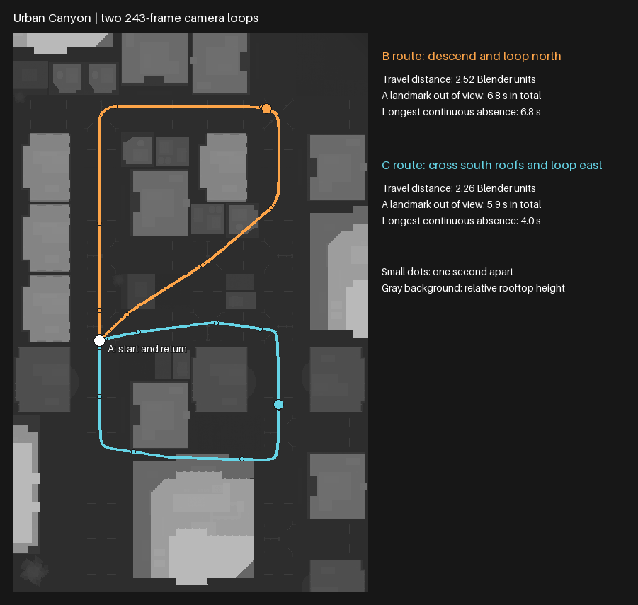
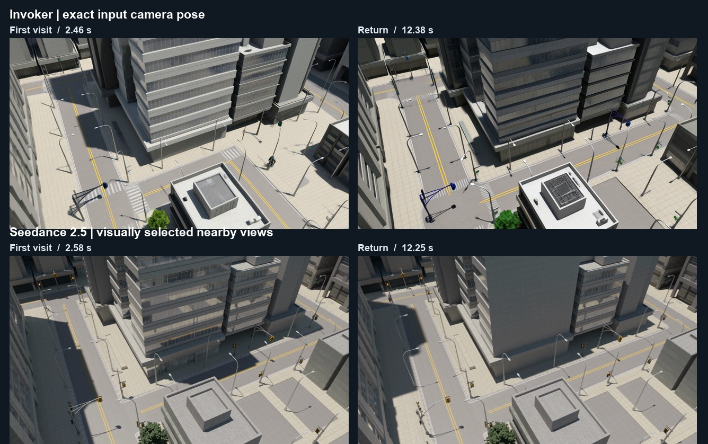
Discussion 2 · 可能方案（改造 Proxy）
怎么守住长程外观？改造送入 DiT 的 Proxy 接口
方案 01 · 免改 DiT 底座
由 Agent 动态决定「把什么送入 DiT」
- 不只单条白模视频 · 按空间重访动态分段生成
- 首次画面回传 · 截出重复场景首次生成帧，作后续参考图
- 预先设计参考图 · 提前为重复地标生成参考图，全程按图生成
- 现有三篇均未做 · 仅锁单张首图，或取上段尾帧顺延
方案 02 · 远期高难度探索
直接把接口变成「显式 3D 资产」？
- 接口升维 · 2D 草模视频 → 带纹理
3DGS / Mesh / 体素 - 根源治本 · 外观绑定三维表面坐标，彻底消除重访换皮
- 落地难度极高 · 视频 DiT 原生吃二维 Token，缺大规模动态 3D 配对数据